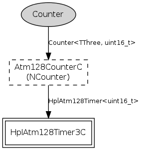

16-bit microsecond Counter component as per TEP102 HAL guidelines. The mica family microsecond clock is built on hardware timer 3, and actually runs at CPU frequency / 8. You can use the MeasureClockC.cyclesPerJiffy() command to figure out the exact frequency.
